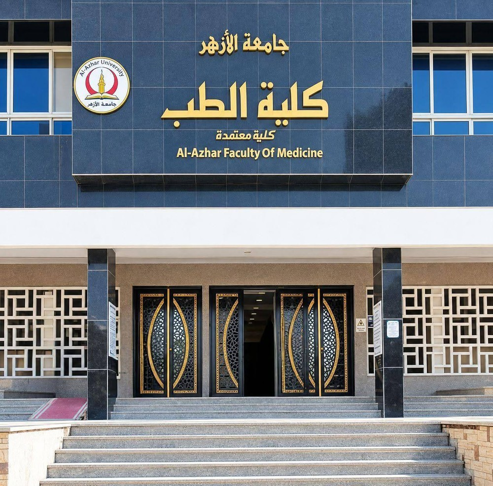

جامعة الأزهر - كلية الطب (بنين) بالقاهرة
كلية معتمدة • Al-Azhar Faculty of Medicine
بنك الأسئلة التفاعلي المعتمد لموديول الـ CVS 🫀
المنصة الطبية الشاملة المخصصة لطلاب كلية الطب، تجمع كافة أسئلة الموديول (808 أسئلة تفاعلية) مع الحلول النموذجية المعتمدة والتفسير العلمي الفوري لكل سؤال.
Physiology CVS (الفسيولوجي)
بنك أسئلة الفسيولوجي المعتمد مقسماً وفقاً لفصول المنهج الدراسي التسعة عشر (19 Chapters) مع التفسير العلمي والمسائل الحسابية المعتمدة.
Pharmacology CVS (الفارماكولوجيا)
أضخم بنك فارماكولوجي يجمع امتحان 2026 بأجزائه الأربعة (190 سؤالاً) وأرشيف القسم القديم (100 سؤال) مع لآلئ الفارما وآليات العمل.
تشريح القلب وغشاء التأمور والأوعية الدموية للصدر والرأس والبطن وتطور القلب والدورة الجنينية (10 موضوعات).
أمراض صمامات القلب، احتشاء عضلة القلب، الحمى الروماتيزمية، تصلب الشرايين، والتشوهات الخلقية للقلب.
التركيب المجهري والأنسجة للشرايين المرنة والعضلية، الشعيرات الدموية، جدران القلب، وصمامات القلب والأوردة.
الميكروبيولوجي والمناعة الطبية - الإصدار الحديث 2026 (التهاب الشغاف الجرثومي، الفيروسات القلبية، والحمى الروماتيزمية).
أرشيف بنك أسئلة قسم الميكروبيولوجيا الطبية مع شروحات علمية دقيقة لكل سؤال والربط الإكلينيكي المعتمد.